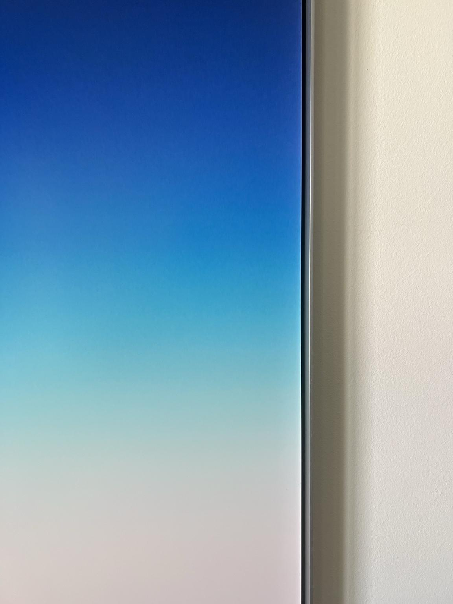

Rahmen
Ein Gespräch zwischen Stefan Heyne und Steffen Huck

Huck
In der Vergangenheit haben wir viel über ‚blur‘ gesprochen.
Heyne
Mit einem kleinen b …
Huck
Ja, mit einem kleinen b und nicht über Song 2. Aber da wir gleich schon bei Negation sind, ist es nicht interessant, dass es im Englischen ein positives Wort dafür gibt, während es im Deutschen negativ definiert ist – ‚Unschärfe‘, die Abwesenheit von Schärfe?
Heyne
Das stimmt. Und es erscheint mir als sehr deutsch, davon auszugehen, dass Schärfe das grundlegende Konzept ist. Man sieht das überall – diesen Drang, eine Linie zu ziehen. Die im Eigentlichen doch immer eine Grenze markieren soll.
Huck
Grenzen zu markieren scheint eine deutsche Stärke. Die Regierung Merz praktiziert das ja gerade konsequent gegen den Geist von Schengen.
Heyne
Allerdings. Und Konsequenz ist ja die deutsche Tugend schlechthin. Wir scheinen sie für alles zu brauchen – Kommunikation, Verhalten, Bürokratie, Gesetze. Überall mögen wir sehr klare Grenzen. Sie geben uns Orientierung, indem sie die Umgebung überschaubar aufbereiten. Sie ermöglichen Vergleich und Skalierung.
Huck
Ist das so? Wenn Grenzen hart sind, wird Skalierung doch eher erschwert. Weil es nur noch Schwarz und Weiß gibt und kein Grau. Und es ist ja genau das Grau, das Skalierung ermöglicht.
Heyne
Ja, ohne blurring, keine Nuance … Im deutschen Denken scheint immer eine rote Linie zu geben, eine Haltelinie oder eine gedankliche Linie im Kopf. Und entweder wird diese Linie überschritten oder nicht. Und wenn sie einmal überschritten ist, zieht man es voll durch… oder denkt das zumindest. Die Frage ist nur: Was genau zieht man dann durch? Denn so gesehen wartet ja hinter der nächsten Ecke schon die nächste Linie.
Huck
Konsequenz ist in der Praxis härter als in der Theorie.
Heyne
Absolut. Es ist ein deutsches Dilemma. Wir mögen scharfe Grenzen, und wenn sie überschritten werden, mögen wir die Eskalation.
Huck
In deiner eigenen Arbeit spielt Unschärfe eine Schlüsselrolle. Macht dich das zu einem eher undeutschen Künstler?
Heyne
Ich habe einen deutschen Pass und sicher bin auch ich kulturell im Sehen und in Sichtweisen geprägt. Aber wenn ich arbeite, also genau in der Zeitspanne des Arbeitens, spielt das eigentlich keine Rolle. Es geht sogar so weit, dass es mich eigentlich gar nicht gibt. In dem Moment bin ich das Werk, das ist eins. Es ist ja nicht so, dass es mich gibt und davon abgesondert ein Werk oder dass ich bewusst etwas tue. Ich weiß auch gar nicht, was genau ich tue. Ich überschreite einfach eine Grenze. Das passiert erst hinterher, wenn man von der Arbeit zurücktritt und anfängt zu reflektieren oder einzuordnen.
Huck
Wow. Das ist viel auf einmal. Und ich nehme Dir die Idee, dass Du erst hinter dem Werk zu Dir selbst findest, nicht ganz ab. Ich meine, Du triffst doch Entscheidungen. Winkel, Fokus, Belichtungszeit …
Heyne
Natürlich wähle ich all das. Mindestens scheint es so, wenn ich ein Stativ aufstelle und irgendwann den Auslöser drücke.
Huck
Es scheint so?
Heyne
Ja, genau, das ist das Gefühl. Bin ich es, der das Bild festhält, oder ist es das Bild, das ich sehe, das es mich festhalten lässt. Ursache und Wirkung verschmelzen im Moment des Klickens.
Huck
Die Unmöglichkeit, Ursache und Wirkung in einem Akt kreativen Schaffens auseinanderzuhalten, finde ich faszinierend, aber mein Gefühl sagt mir, dass wir das heute nicht komplett auseinanderdividieren werden.
Heyne
Ich hätte schon Lust, das zu diskutieren.
Huck
Ich auch.
Heyne
Ok, dann lass uns das festhalten für unseren nächsten Dialog,
Huck
Deal.
Heyne
Ich freu mich drauf!
Heyne
Was ist mit den Wörtern?